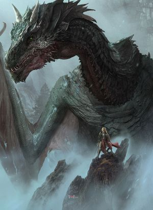
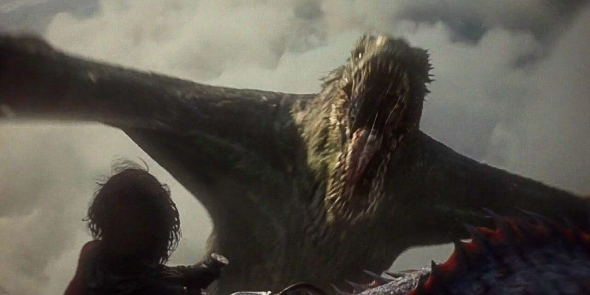

Vhagar foi uma das três grandes montarias dragão que a Casa Targaryen usou para conquistar e unificar os Sete
Reinos, servindo inicialmente à Rainha Visenya Targaryen.
Com escamas de tom verde-bronze e olhos que brilhavam como poços de fogo, ela era conhecida por seu sopro
incrivelmente quente, capaz de derreter armaduras em segundos.
Após a morte de sua primeira mestre, ela foi reuni-se a Baelon, o Bravo, e mais tarde por Laena Velaryon.
Contudo, foi durante a Dança dos Dragões, sob a montaria do feroz Príncipe Aemond Targaryen, que Vhagar alcançou
seu ápice de terror.
Já idosa, ela havia crescido tanto que seu tamanho rivalizava com o do lendário Balerion, tornando-se a criatura
mais massiva, experiente e destrutiva de sua era até sua queda dramática na Batalha do Olho de Deus.


 dragao anterior
Próximo dragão
Voltar ao Menu
dragao anterior
Próximo dragão
Voltar ao Menu